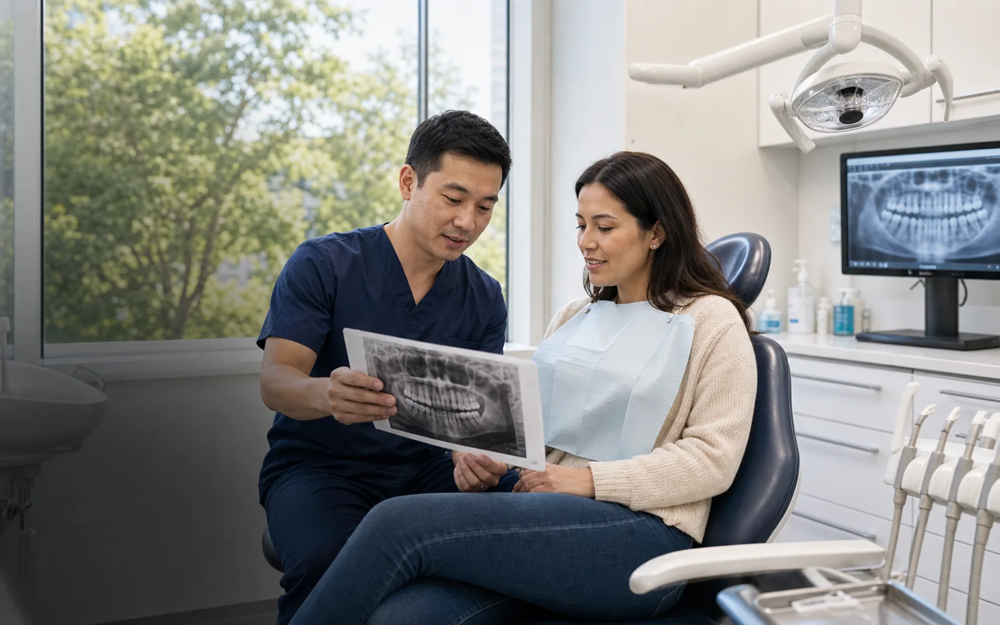
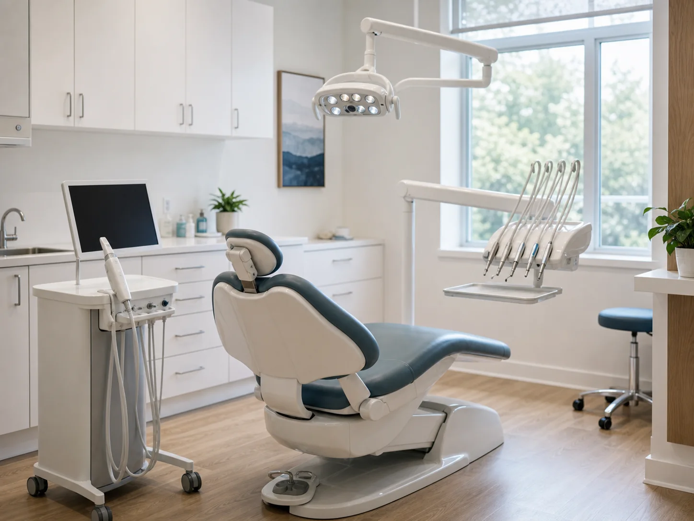

Implantes dentários
Uma possibilidade para reabilitação de dentes perdidos, conforme avaliação profissional.
Tenho interesse
Odontologia no Shopping Nova América
Implantes, tratamento de canal, extrações e clareamento dental com atenção profissional em Del Castilho, Rio de Janeiro.
Os canais oficiais de agendamento e WhatsApp serão ativados após confirmação pela clínica.
Shopping Nova América · Del Castilho · RJImplantes dentários; tratamento de canal; extrações dentárias; clareamento dental; saúde bucal.
Cuidado odontológico
Conheça os tratamentos prioritários da AS Dental. A indicação depende de avaliação profissional.
Uma possibilidade para reabilitação de dentes perdidos, conforme avaliação profissional.
Tenho interesseCuidado para situações que comprometem a parte interna do dente, com indicação após avaliação.
Tenho interesseAvaliação cuidadosa para identificar quando a remoção de um dente é indicada.
Tenho interesseOpções para cuidar da estética do sorriso com orientação profissional.
Tenho interesseA disponibilidade dos tratamentos deve ser confirmada com a clínica. Cada plano depende de avaliação odontológica individual.
Atendimento com cuidado; localização conveniente; informações claras; agendamento simplificado.
A experiência AS Dental
Um espaço para conhecer opções de tratamento e conversar sobre o cuidado adequado para cada caso.
Tire suas dúvidasUm plano de cuidado começa pela avaliação das necessidades de cada pessoa.
Informação compreensível ajuda você a participar das decisões sobre o tratamento.
Referência no Shopping Nova América, em Del Castilho, na Zona Norte do Rio.
Implantes, canal, extrações e clareamento, sempre com indicação após avaliação.
Uma etapa de cada vez
Converse com a equipe e entenda os próximos passos para o seu caso.
Use o agendamento online assim que o link oficial estiver configurado ou fale com a equipe.
Converse com o profissional e explique suas necessidades e expectativas.
As opções de cuidado são discutidas de acordo com a avaliação do seu caso.
O link oficial do Simples Dental ainda não foi fornecido.
Um olhar sobre odontologia
As imagens abaixo são demonstrativas e não representam instalações confirmadas da AS Dental.


Substituir por fotografias autorizadas da clínica antes da publicação definitiva.
Saúde bucal em Del Castilho; avaliação profissional; Shopping Nova América.
Profissionais
Os perfis serão exibidos após confirmação das informações profissionais pela clínica.
Os perfis da equipe aguardam confirmação de nomes, fotos, funções e registros profissionais.
Nenhum perfil demonstrativo é exibido como se fosse integrante da clínica.
Experiências de pacientes
A seção publicará somente avaliações verificadas e aprovadas para divulgação.
As avaliações ainda não foram fornecidas para publicação.
Onde estamos
Av. Pastor Martin Luther King Jr., 126
Del Castilho · Rio de Janeiro · RJ
Referência de endereço preliminar. Piso, sala e unidade exata aguardam confirmação da clínica.
O mapa mostra o endereço de referência do shopping, não uma sala específica da clínica.
O mapa do Google só carrega quando você solicita.
Dúvidas frequentes
Respostas gerais. A equipe da AS Dental deve confirmar detalhes de atendimento e disponibilidade.
O link oficial do Simples Dental ainda não está configurado. O agendamento será habilitado após a clínica fornecer o endereço correto.
O site destaca implantes, tratamento de canal, extrações e clareamento dental. Confirme disponibilidade e indicação diretamente com a clínica.
A referência preliminar é o Shopping Nova América, na Av. Pastor Martin Luther King Jr., 126, Del Castilho, Rio de Janeiro. Piso e sala ainda precisam ser confirmados.
O site está sendo preparado para apresentar atendimento particular. Consulte a clínica para confirmar formas de atendimento e pagamento.
O profissional avalia as necessidades de cada pessoa e explica as opções de cuidado indicadas para aquele caso.
O número oficial de WhatsApp e os demais contatos ainda não foram cadastrados. Eles serão ativados quando confirmados pela clínica.
A indicação depende de avaliação odontológica individual. O conteúdo do site não substitui uma consulta profissional.
AS Dental · Del Castilho
Conheça os tratamentos e agende sua avaliação no Shopping Nova América quando os canais oficiais estiverem configurados.